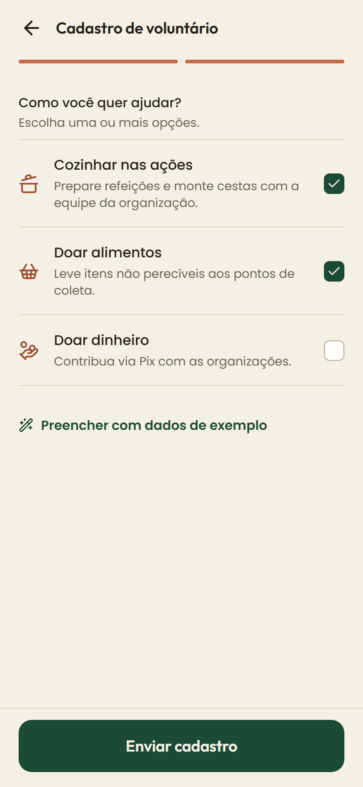
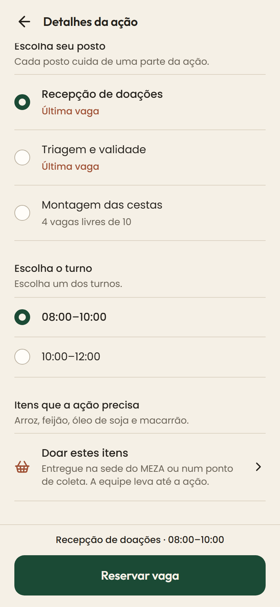
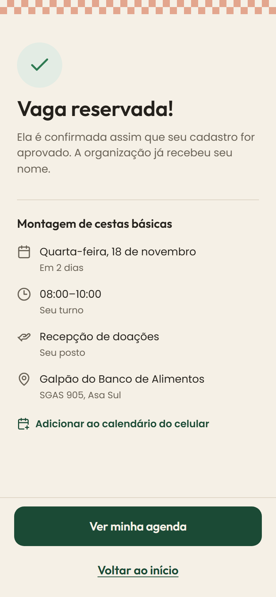

Puxa uma cadeira, DF.
O MEZA liga quem quer ajudar às organizações que já levam comida a quem tem fome no Distrito Federal. Você entra com o seu tempo, com alimentos ou com dinheiro.
No DF, a fome cresceu enquanto caía no resto do país.
Em 2024, 27% dos lares do DF viviam algum grau de insegurança alimentar. É mais de um em cada quatro.
- Distrito Federal
- 23,5%27%
- dos lares, de 2023 para 2024. Subiu.
- Brasil
- 27,6%24,2%
- dos lares, no mesmo período. Caiu.
- Gente
- 845 mil
- pessoas no DF vivem com algum nível de restrição alimentar, quase 100 mil a mais em um ano.
Fontes: IBGE, PNAD Contínua (2023 e 2024), e levantamento da 6ª Conferência Distrital de Segurança Alimentar e Nutricional (2026), via Brasil de Fato.
Já tem gente entregando. O MEZA leva você até elas.
No DF, organizações cozinham e distribuem refeições toda semana. O que falta a elas são mãos, alimentos e dinheiro. Em vez de montar uma rede do zero, o MEZA mostra onde a sua ajuda faz falta.
-
Você ajuda
Cozinha, separa, embala, doa alimentos ou doa dinheiro. Você escolhe o que cabe na sua semana.
-
A organização entrega
ONGs, coletivos e cozinhas comunitárias que já levam comida a quem precisa, e sabem onde ela falta.
-
A refeição chega
A pessoas em situação de rua e a famílias em insegurança alimentar no Distrito Federal.
Três jeitos de ajudar
Pode ser um só, podem ser os três.
-
Seu tempo
Escolha uma ação, um posto e um turno. Tem cozinha, montagem de cestas, triagem de alimentos e embalagem de marmitas.
-
Alimentos
Veja o que cada ação está pedindo, escolha o item e a quantidade e entregue na sede do MEZA ou num ponto de coleta parceiro.
-
Dinheiro
Doe por Pix, cartão ou em mãos. O valor vai para o MEZA ou para a ação que você escolher.
Do cadastro à vaga reservada, tudo no app
O app abre no navegador do celular. Não precisa instalar nada.
-
Cadastre-se e diga como quer ajudar
São duas etapas. É preciso ter 16 anos ou mais, e a equipe do MEZA confere cada cadastro.

-
Escolha a ação, o posto e o turno
Cada ação mostra a data, o lugar, o que será feito e quantas vagas ainda há em cada posto.

-
Receba a confirmação
A vaga fica reservada na hora, e você pode salvar a data no calendário do celular.

Sua organização já leva comida a quem precisa?
Cadastre-se como parceira e publique as próximas ações com data, horários, postos e os itens de que vocês precisam. Os voluntários se inscrevem e as doações chegam pelo MEZA. A equipe valida cada cadastro antes de a organização aparecer no app.
Cadastrar organizaçãoMeza se lê “mesa”
As iniciais dos nossos quatro valores formam o nome. E o nome diz o que a gente quer: que a mesa seja de todos.
- mobilização
- empatia
- zelo
- alimentação
Sempre cabe mais um.
Do Gama a Planaltina, tem gente esperando um prato. Escolha um horário e venha servir.
Quero ajudar